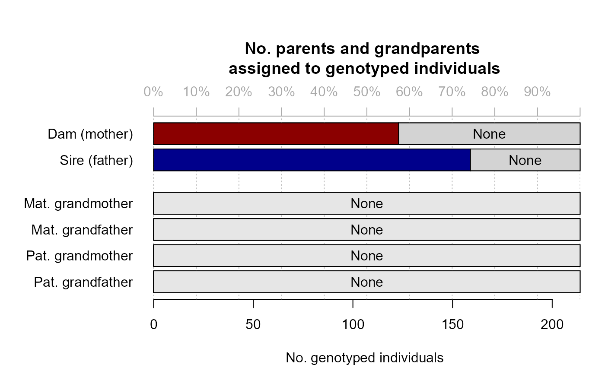

CalcPairLL.RdFor each specified pair of individuals, calculate the log10-likelihoods of being PO, FS, HS, GP, FA, HA, U (see Details). Individuals must be genotyped or have at least one genotyped offspring.
NOTE values \(>0\) are various NA types, see 'Likelihood
special codes' in 'Value' section below.
CalcPairLL( Pairs = NULL, GenoM = NULL, Pedigree = NULL, LifeHistData = NULL, AgePrior = TRUE, SeqList = NULL, Complex = "full", Herm = "no", Err = 1e-04, ErrFlavour = "version2.0", Tassign = 0.5, Tfilter = -2, quiet = FALSE, Plot = TRUE )
| Pairs | dataframe with columns
|
|---|---|
| GenoM | numeric matrix with genotype data: One row per individual, and
one column per SNP, coded as 0, 1, 2 or -9 (missing). See also
|
| Pedigree | dataframe with columns id-dam-sire; likelihoods will be calculated conditional on the pedigree. May include non-genotyped individuals, which will be treated as dummy individuals. |
| LifeHistData | dataframe with 3 columns (optionally 5):
If the species has multiple generations per year, use an integer coding such that the candidate parents' `Birth year' is at least one smaller than their putative offspring's. Column names are ignored, so ensure column order is ID - sex - birth year (- BY.min - BY.max). Individuals do not need to be in the same order as in `GenoM', nor do all genotyped individuals need to be included. |
| AgePrior | logical ( |
| SeqList | list with output from |
| Complex | Breeding system complexity. Either "full" (default), "simp" (simplified, no explicit consideration of inbred relationships), "mono" (monogamous). |
| Herm | Hermaphrodites, either "no", "A" (distinguish between dam and sire role, default if at least 1 individual with sex=4), or "B" (no distinction between dam and sire role). Both of the latter deal with selfing. |
| Err | estimated genotyping error rate, as a single number or 3x3 matrix. Details below. The error rate is presumed constant across SNPs, and missingness is presumed random with respect to actual genotype. |
| ErrFlavour | function that takes |
| Tassign | minimum LLR required for acceptance of proposed relationship, relative to next most likely relationship. Higher values result in more conservative assignments. Must be zero or positive. |
| Tfilter | threshold log10-likelihood ratio (LLR) between a proposed relationship versus unrelated, to select candidate relatives. Typically a negative value, related to the fact that unconditional likelihoods are calculated during the filtering steps. More negative values may decrease non-assignment, but will increase computational time. |
| quiet | logical, suppress messages |
| Plot | logical, display scatter plots by |
The Pairs dataframe including all optional columns listed
above, plus the additional columns:
Log10-Likelihood of this pair having relationship xx, with xx being one of PO, FS, etc. as detailed below.
Abbreviation of most likely relationship
Likelihood ratio between most-likely and second most likely relationships
Parent - offspring
Full siblings
Half siblings
Grandparent
Full avuncular
Half avuncular and other 3rd degree relationships
Unrelated
Unclear which type of 2nd degree relatives (HS, GP, or FA)
Unclear which type of 1st, 2nd or 3rd degree relatives
Maybe (via) other parent (e.g. focal="GP", but as likely to be maternal as paternal grandparent, and therefore not assignable)
Excluded from comparison (shouldn't occur)
Not implemented (e.g. would create an odd double/triple relationship in combination with the provided pedigree)
Impossible (e.g. cannot be both full sibling and grandparent)
Already assigned in the provided pedigree (see dropPar
arguments)
NA
The same pair may be included multiple times, e.g. with different sex, age difference, or focal relationship, to explore their effect on the likelihoods. Likelihoods are only calculated for relationships that are possible given the age difference, e.g. PO (parent-offspring) is not calculated for pairs with an age difference of 0.
Non-genotyped individuals can be included if they have at least one
genotyped offspring and can be turned into a dummy (see
getAssignCat); to establish this a pedigree must be provided.
Warning 1: There is no check whether the input pedigree is genetically
sensible, it is simply conditioned upon. Checking whether a pedigree is
compatible with the SNP data can be done with CalcOHLLR.
Warning 2: Conditioning on a Pedigree can make computation
orders of magnitude slower.
Especially when Complex='full', not only the seven relationship alternatives listed above are considered, but a whole range of possible double and even triple relationships. For example, mother A and offspring B (PO) may also be paternal half-siblings (HS, A and A's mother mated with same male), grandmother and grand-offspring (GP, B's father is A's son), or paternal aunt (B's father is a full or half sib of A).
The likelihood reported as 'LL_PO' is the most-likely one of the possible alternatives, among those that are not impossible due to age differences or due to the pedigree (as reconstructed up to that point). Whether e.g. the likelihood to be both PO & HS is counted as PO or as HS, depends on the situation and is determined by the variable 'focal': During parentage assignment, it is counted as PO but not HS, while during sibship clustering, it is counted as HS but not PO -- not omitting from the alternative relationship would result in a deadlock.
PlotPairLL to plot alternative relationship pairs from
the output; CalcOHLLR to calculate LLR for parents &
parent-pairs in a pedigree; GetRelM to find all pairwise
relatives according to the pedigree; GetMaybeRel to get
likely relative pairs not in the pedigree.
# likelihoods underlying parent LLR in pedigree: data(LH_HSg5, SimGeno_example) Seq.HSg5 <- sequoia(SimGeno_example, LH_HSg5, Module="par")#>#>#> #>#> #>#> Parentage ... #> Initial total LL : #> [1] -18301.9 #> Post-parentage total LL : #> [1] -13795.2 #> Estimating birth years ... #> Calculating parental LLR ...#>#> id dam sire LLRdam LLRsire LLRpair OHdam OHsire MEpair #> 209 b01187 <NA> b00008 NA 3.43 NA NA 0 NA #> 210 b01188 <NA> b00008 NA 3.99 NA NA 0 NA #> 211 a01189 <NA> b00007 NA 0.63 NA NA 0 NA #> 212 a01190 a00012 b00007 4.51 4.34 7.27 0 0 0 #> 213 b01191 a00012 b00007 0.98 4.16 3.89 0 0 1 #> 214 a01192 a00012 b00007 0.95 2.92 3.83 0 0 1# take bottom 3 individuals: Pairs <- data.frame(ID1 = c("a01190", "b01191", "a01192"), ID2 = rep(c("a00012", "b00007"), each=3), AgeDif = 1, focal = "PO") # LLRdam & LLRsire: CalcPairLL(Pairs, SimGeno_example)#> ID1 ID2 Sex1 Sex2 AgeDif focal patmat dropPar1 dropPar2 PO FS #> 1 a01190 a00012 3 3 1 PO 1 none none -158.11 -163.01 #> 2 b01191 a00012 3 3 1 PO 1 none none -161.38 -162.95 #> 3 a01192 a00012 3 3 1 PO 1 none none -160.99 -163.28 #> 4 a01190 b00007 3 3 1 PO 1 none none -156.58 -162.32 #> 5 b01191 b00007 3 3 1 PO 1 none none -154.75 -159.60 #> 6 a01192 b00007 3 3 1 PO 1 none none -154.58 -157.55 #> HS GP FA HA U TopRel LLR #> 1 -162.10 777 777 -162.10 -172.83 PO 3.99 #> 2 -161.62 777 777 -161.62 -172.02 PO 0.24 #> 3 -161.37 777 777 -161.37 -171.09 PO 0.38 #> 4 -160.92 777 777 -160.92 -168.60 PO 4.34 #> 5 -158.91 777 777 -158.91 -167.79 PO 4.16 #> 6 -157.49 777 777 -157.49 -166.85 PO 2.92# LLRpair is min. of dam & sire LLR, conditional on co-parent: CalcPairLL(cbind(Pairs, dropPar1=rep(c("dam", "sire"), each=3)), SimGeno_example, SeqList = Seq.HSg5)#>#>#>#>#> ID1 ID2 Sex1 Sex2 AgeDif focal patmat dropPar1 dropPar2 PO FS HS #> 1 a01190 a00012 1 1 1 PO 1 dam none -137.55 777 777 #> 2 b01191 a00012 2 1 1 PO 1 dam none -139.95 777 777 #> 3 a01192 a00012 1 1 1 PO 1 dam none -139.88 777 777 #> 4 a01190 b00007 1 2 1 PO 2 sire none -133.32 777 777 #> 5 b01191 b00007 2 2 1 PO 2 sire none -135.72 777 777 #> 6 a01192 b00007 1 2 1 PO 2 sire none -135.65 777 777 #> GP FA HA U TopRel LLR #> 1 777 777 -149.22 -160.81 PO 11.67 #> 2 777 777 -147.98 -158.98 PO 8.03 #> 3 777 777 -147.78 -158.81 PO 7.90 #> 4 777 777 -143.63 -153.88 PO 10.31 #> 5 777 777 -146.47 -157.14 PO 10.75 #> 6 777 777 -146.21 -156.75 PO 10.57# \donttest{ # likelihoods underlying LLR in getMaybeRel output: data(Ped_griffin, SeqOUT_griffin, package="sequoia") Geno.griffin <- SimGeno(Ped_griffin, nSnp=200, SnpError = 0.01, ParMis=0.4) MR <- GetMaybeRel(GenoM = Geno.griffin, LifeHistData = SeqOUT_griffin$LifeHist, Module = "par", Err = 0.001)#>#>#>#> Counting opposing homozygous loci between all individuals ... #> Checking for non-assigned Parent-Offspring pairs ... #> Checking for Parent-Parent-Offspring trios ...#>#>FivePairs <- MR$MaybePar[1:5, c("ID1", "ID2", "Sex1", "Sex2")] FivePairs$AgeDif <- NA # pretend unknown age differences PairLL <- CalcPairLL(Pairs = rbind( cbind(FivePairs, focal = "PO"), cbind(FivePairs, focal = "HS"), cbind(FivePairs, focal = "GP")), GenoM = Geno.griffin, Err = 0.005, Plot=FALSE) PairLL[c(1, 6, 11), ]#> ID1 ID2 Sex1 Sex2 AgeDif focal patmat dropPar1 dropPar2 #> 1 i115_2006_F i087_2005_F 1 1 NA PO 1 none none #> 6 i115_2006_F i087_2005_F 1 1 NA HS 1 none none #> 11 i115_2006_F i087_2005_F 1 1 NA GP 1 none none #> PO FS HS GP FA HA U TopRel LLR #> 1 -158.05 -163.82 -162.99 -162.44 777 -162.99 -172.66 PO 4.40 #> 6 -158.05 222.00 -161.37 -161.37 777 -162.99 -172.66 PO 3.32 #> 11 -158.05 -163.82 -161.37 222.00 777 -162.99 -172.66 PO 3.32# LL(FS)==222 : HSHA, HSGP, FAHA more likely than FS # LL(GP) higher when focal=HS: GP via 'other' parent also considered # LL(FA) higher when focal=PO: FAHA, or FS of 'other' parent # }